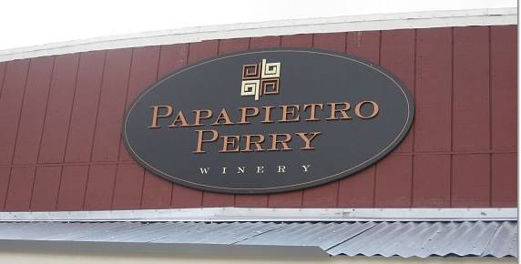

<html>
<head>
<title>
TheWineRater.com - Papapietro Perry
<META name="description" content="The Papapietro Perry wines of Sonoma County, California are described."></META>
<META name="keywords" content="Papapietro Perry, wine, grapes, vin, Sonoma, California, vino, vini, Wein"></META>
</head>
<body>

<iframe src="../../../../../../banner.html" width="100%" height=160 frameborder=0></iframe>
<table><tr><td valign=top width=170>
<iframe src ="../../../../../../links.html" width="100%" height=400>
</iframe>
<td>
<table><tr><td valign=top>

<a href="../../../../index.html">North America</a> >
<a href="../../../index.html">USA</a> >
<a href="../../index.html">California</a> >
<a href="../index.html">Sonoma</a> >
Papapietro Perry
 

<p>


<center><font color=maroon>

<p>
Healdsburg, CA
<br />
</center></font>
<p>
<a href="http://www.papapietro-perry.com" target=wineste>www.papapietro-perry.com</a>
<br />
<p>

Papapietro and Perry focus their winemaking on the difficult Pinot Noir.
<br />
<p>

<b>Vintages:</b>
<p>

Russian River Valley Pinot Noir
<a href="russian_river_valley_pinot_noir/2004.html">2004</a>
<a href="russian_river_valley_pinot_noir/2005.html">2005</a><br />

Russian River Valley Pinot Noir Elsbree Vineyard
<a href="russian_river_valley_pinot_noir_elsbree_vineyard/2004.html">2004</a>
<a href="russian_river_valley_pinot_noir_elsbree_vineyard/2005.html">2005</a><br />

Russian River Valley Pinot Noir Leras Family Vineyard
<a href="russian_river_valley_pinot_noir_leras_family_vineyard/2004.html">2004</a>
<a href="russian_river_valley_pinot_noir_leras_family_vineyard/2005.html">2005</a><br />

Russian River Valley Pinot Noir Pommard Clones
<a href="pommard_clones_russian_river_valley_pinot_noir/2005.html">2005</a><br />

Sonoma Coast Peters Vineyard Pinot Noir
<a href="sonoma_coast_peters_vineyard_pinot_noir/2004.html">2004</a><br />

Sonoma Coast Pinot Noir Pommard Clones
<a href="pinot_noir_sonoma_coast_pommard_clones/2004.html">2004</a><br />

Sonoma Coast Pinot Noir
<a href="sonoma_coast_pinot_noir/2006.html">2006</a><br />

Dry Creek Valley Zinfandel Pauline's Vineyard
<a href="dry_creek_valley_zinfandel_paulines_vineyard/2004.html">2004</a><br />

Russian River Valley Zinfandel
<a href="russian_river_valley_zinfandel/2004.html">2004</a><br />

Russian River Valley Zinfandel Elsbree Vineyard
<a href="russian_river_valley_zinfandel_elsbree_vineyard/2005.html">2005</a><br />

<p>

<td valign=top>
<script type="text/javascript"><!--
google_ad_client = "pub-7854718838870175";
google_ad_width = 120;
google_ad_height = 600;
google_ad_format = "120x600_as";
google_ad_type = "text_image";
//2006-10-31: www.TheWineRater.com
google_ad_channel = "0729782333";
//--></script>

<script type="text/javascript"
  src="http://pagead2.googlesyndication.com/pagead/show_ads.js">
</script>
</table>

</table>

<!-- ------------------------------------------------------------- -->
<hr>
<H5>This page last modified 20 February 2010 by
<a href="mailto: bradley@wogsland.org">TheWineRater</a>.</H5>

<iframe src ="../../../../../../copyright.html" 
width="100%" height=100 frameborder=0>
</iframe>

</body>
</html>
